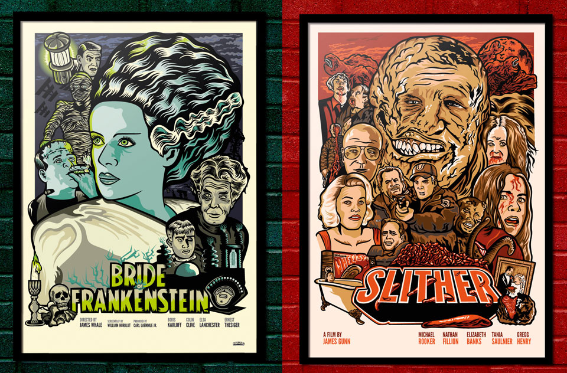

Film Posters
At the Drive-In
While working at Malgusto with Marga Martinez, we realized how we missed doing posters to try new things apart from T-shirt design. So we decided to make a series of posters for films we admired. Marga did the illustrations here, my work was to come up with the idea, and sketch the composition. I also added typography and created the colour palettes used. Directors James Gunn and Oscar Aibar liked what we did for their movies, and we learn some tricks about how to fit lots of references into a single image.
You can check the posters in more detail, and some other work at the Malgusto tumblr